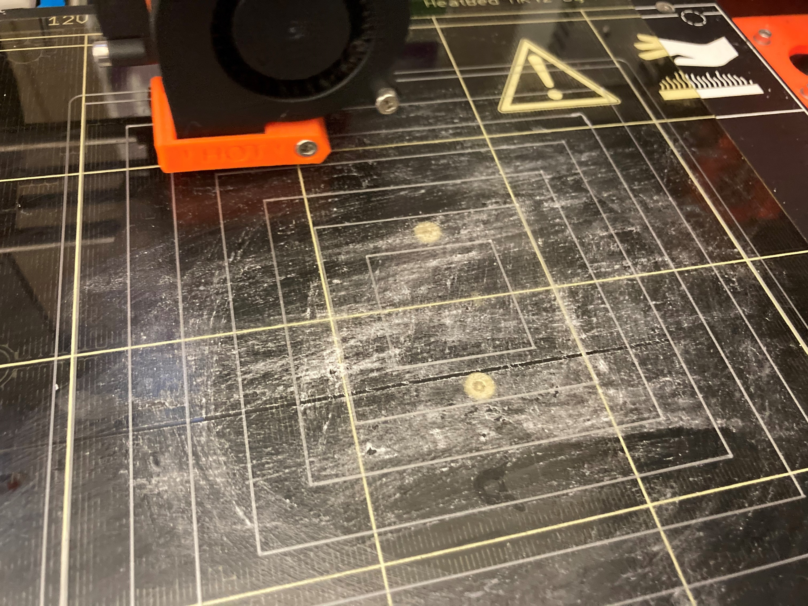
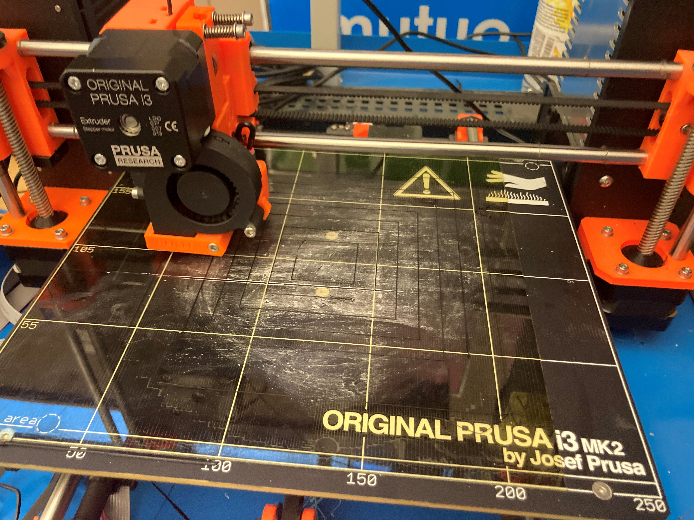

I am using a Prusa printer that has already been built by the IT (a couple years ago). I started by running a bed level test. The prusa has an auto adjuster so I am learning adust past that. First round the test was a bit loose. I was required to wait for the IT intern, by the head of IT to proceed. We worked together and actually ajusted the heat and that helped and that fixed most of the problem. I think I can still make it better, however its pretty close and very workable for not detailed work. I plan to do some more research and I think IT is starting to trust me to make more adjustments.
Below I have a couple pictures from the tests.

First Print, some sticking and some areas to close.

Much better!
All the Shapes
This has been a great activity to get to know the settings and get used to the workflow of getting something printed. In addition to what we used in class I am using OctoPrint to send my g.code to the printer.
I created a chart to document my work and I have also been labeling my geometric shapes for potential future use to show others and for my own reference. I am getting excited to see how this work with translate into a middle school digital fabrication class!